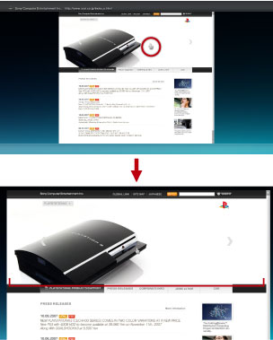

Nätverk > Ändra visningsstorleken för en webbsida
Ändra visningsstorleken för en webbsida
Webbsidor kan visas alltför små eller alltför stora beroende på inställningen för PS3™-systemets videoutdata och den anslutna tv-apparaten. Om så är fallet kan du använda följande metod för att justera visningsstorleken.
Använda zoomfunktionen
Förstora automatiskt det skärmområde där markören befinner sig till optimal storlek. Det optimala förstoringsförhållandet beräknas automatiskt för det område där markören är placerad. Placera markören i det område du vill förstora, tryck på  -knappen och välj [Zoom] under
-knappen och välj [Zoom] under  (Visa) i alternativmenyn.
(Visa) i alternativmenyn.
Exempel på zoomning av text
Systemet beräknar förstoringsförhållandet beroende på meningens textlängd i det område där markören är placerad och visar texten i zoomläge.

Exempel på zoomning av en bild
Systemet beräknar förstoringsförhållandet beroende på bildens storlek i det område där markören är placerad och visar bilden i zoomläge.

Ändra upplösningen
Ändrar skärmupplösningen för en webbsida. Du kan justera webbsidans visning optimalt så den anpassas till upplösningen för PS3™-systemets videoutdata. Tryck på -knappen och välj [Upplösning] under  (Verktyg) i alternativmenyn.
(Verktyg) i alternativmenyn.
Om du väljer [-1] eller [-2] när upplösningen för PS3™-systemets videoutdata är inställd på 1080p eller 1080i så förstoras skärmbilden för bättre visning. Om du väljer [+1] eller [+2] när upplösningen för PS3™-systemets videoutdata är inställd på Standard (NTSC: 480i / PAL: 576i) eller 480p / 576p så förminskas skärmbilden för bättre visning.
Exempel på när upplösningen för PS3™-systemets videoutdata är inställd på [1080i] och [Upplösning] är [-2]

Exempel på när upplösningen för PS3™-systemets videoutdata är inställd på [Standard (NTSC: 480i / PAL: 576i)] och [Upplösning] är [+2]